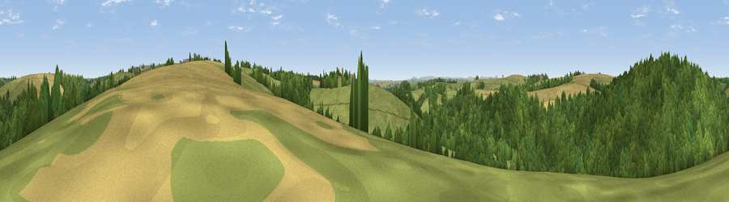

Viewpoint near Virginstow
#27961 in England · top 61% of its area beats it · near VirginstowWhere it is
The exact computed spot (SX 37525 93275). Click the marker for map links.
The view, rendered

A 360° render of this exact spot computed from the terrain model, tree cover and land cover — summer colours, afternoon light, calibrated against photographs of famous viewpoints. Real trees, hedges and buildings will differ in detail.
The panorama
Grey silhouette: terrain skyline in each direction (720 bearings, Earth curvature and refraction included). Dashed green: skyline with trees (+15 m) and buildings (+8 m) as obstacles. Blue strip: how far the ground is visible on each bearing.
Where the view opens
Wedge length = distance to the farthest visible ground on that bearing (vegetation-aware). Rings at 10, 25 and 50 km.
What fills the view
58% woodland · 27% grassland · 14% cropland
Angular shares of the visible panorama (visual magnitude), not map area. Landscape diversity 0.42 (0–1 Shannon).
Key numbers
More beautiful places nearby
The staircase of upgrades: each row has a higher view potential than everything closer. Driving times are estimates from straight-line distance, calibrated against real road routing — check an actual route before setting out.
| Place | Direction | Drive | Score |
|---|---|---|---|
| Viewpoint near Chapmans Well | WSW · 2 km | ~6 min | 57.4 |
| Viewpoint near Tinhay | SSE · 10 km | ~19 min | 61.3 |
| Viewpoint near Chillaton | SSE · 12 km | ~22 min | 63.4 |
| Viewpoint near Whitstone | WNW · 13 km | ~24 min | 69.4 |
| Brent Tor | SE · 16 km | ~28 min | 73.4 |
| Sourton Tors | E · 17 km | ~30 min | 74.8 |
| Viewpoint near Sourton | ESE · 18 km | ~31 min | 75.7 |
| Great Links Tor | ESE · 19 km | ~32 min | 77.8 |
50.71633, -4.30288 · source: screening · position refined by local search. Computed location — check access rights before visiting.